 REPERTÓRIO
REPERTÓRIO

Era meu antigo repertório, são boas para o estilo da banda e para tocar, sou mais inclinado às músicas internacionais - Spotify
- Little Black Submarines (The Black Keys)
- Born to be Wild (Steppenwolf)
- Black (Pearl Jam)
- Last Kiss (Pearl Jam)
- Like a Stone (Audioslave)
- I am the Highway (Audioslave)
- Be yourself (Audioslave)
- Whats up (4 Non Blondes)
- Simple Man (Lynyrd Skynyrd)
- Another Brick in the Wall (Pink Floyd)
- Otherside (RHCP)
- Make it Chu (Queens of the Stone Age)
- Demons (Imagine Dragons)
- Where is my Mind? (Pixies)
- Rolling in the Deep (Adele)
- O Tempo Não Para (Cazuza)
- Que País é Este ? (Legião Urbana)
- Tempo Perdido (Legião Urbana)
- Fátima (Capital Inicial)
- A Sua Maneira (Capital Inicial)
- Dyer Maker (Led Zeppelin)
- Rebel Yell (Cover Blakwall)
- O Papa é Pop (Engenheiros do Hawaii)
- Wicked Game (Chris Isaak)
- Do I Wanna Know? (Arctic Monkeys)
- Yellow (Coldplay)
- The Scientist (Coldplay)
- Have You Ever Seen The Rain (Creedence)
- Proud Mary (Creedence)
- Knockin on Heavens Door (Bob Dylan/ Guns N`Roses)
- Come As You Are (Nirvana)
- Sympathy For The Devil (Rolling Stones)
- Aonde Quer Que Eu Vá (Os Paralamas Do Sucesso)
- Creep (Radiohead)
- Clint Eastwood - Refrão (Gorillaz)